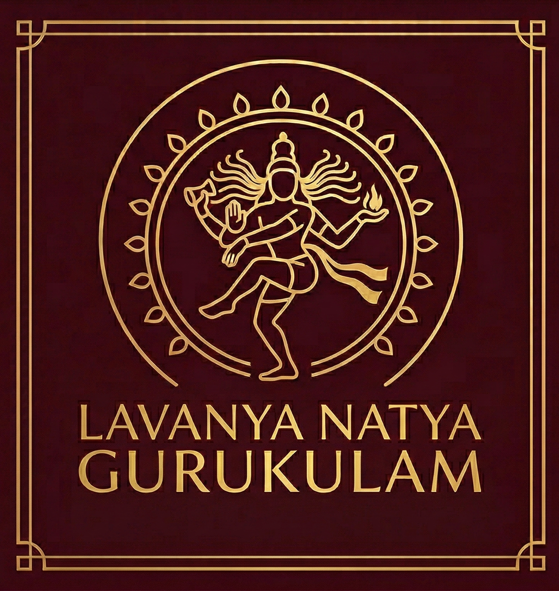
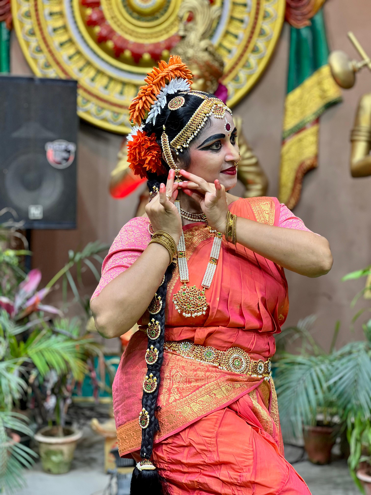
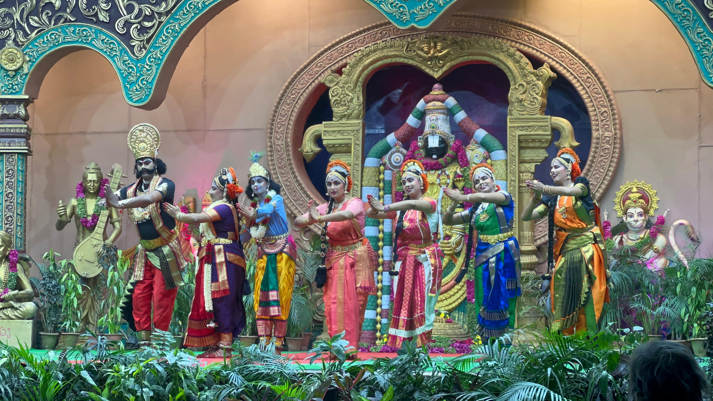

Discipline & Focus
The methodical structure of classical training — where a single adavu (basic step sequence) may take months to perfect — builds patience, concentration, and a deep capacity for focused effort that benefits every aspect of life.

est. in the tradition of Siddhendra Yogi
लावण्य नाट्य गुरुकुलम् — Lavanya Natya Gurukulam
A Kuchipudi dance academy rooted in classical tradition — nurturing discipline, artistry, and cultural pride in the new generation. Every movement tells a story that is thousands of years old.
Begin Your Journey
The Art Form
Born in the sacred village of Kuchipudi in the Krishna district of Andhra Pradesh, this ancient dance form carries within it over five centuries of devotion, scholarship, and human expression. What began as Yakshagana — dramatic musical dance-theatre performed by Brahmin men in honour of Lord Krishna — gradually evolved into one of the eight classical dance forms officially recognised by India's Sangeet Natak Akademi. Every gesture, every step, every glance has a name, a grammar, and a meaning refined across generations.
The genius of Kuchipudi lies in its dual soul: it is simultaneously rigorous and joyful. The tightly codified language of abhinaya (expression), mudras (hand gestures), and footwork demands years of careful study, yet when mastered, it becomes something effortless — a direct channel between the dancer's inner world and the audience's heart. The form draws from the Natya Shastra, the ancient Sanskrit treatise on performing arts, making each performance an act of living scholarship.
The reformer-sage Siddhendra Yogi is credited with giving Kuchipudi its present structure in the 17th century, choreographing the famous Bhama Kalapam — a dance-drama so profound it has been performed without interruption for over 400 years. Today, Kuchipudi has travelled from temple courtyards to the world's greatest concert halls, performed in New York, London, Tokyo, and Paris — yet it has never lost the sacred intimacy that makes it uniquely Indian, uniquely human.
To learn Kuchipudi is not merely to learn steps. It is to become part of a living conversation that began centuries before you were born — and will continue long after. At Lavanya Natya Gurukulam, we carry this flame forward, one student at a time.
For the New Generation
In an age of screens and speed, the discipline of classical dance offers something rare and irreplaceable. Here is what your child — or you — will truly gain.
The methodical structure of classical training — where a single adavu (basic step sequence) may take months to perfect — builds patience, concentration, and a deep capacity for focused effort that benefits every aspect of life.
Growing up between cultures can feel like standing between two shores. Kuchipudi gives young people a living connection to their heritage — not as a museum piece, but as a practice they embody in their own hands, feet, and eyes.
The nine classical emotions — Navarasas — are not just theatrical tools; learning to consciously access and express joy, sorrow, courage, and wonder builds profound emotional vocabulary and empathy in young performers.
Every recital, every class, every moment of holding a pose under a teacher's watchful eye trains poise and stage confidence. Students consistently carry themselves differently — more grounded, more present, in every room they enter.
Class Timings
Friday
5:30 PM — 7:30 PM
Beginners WelcomeSaturday
5:30 PM — 7:30 PM
All LevelsSunday
5:30 PM — 7:30 PM
Performance Prep✦ Trial class available upon inquiry ✦ All age groups welcome ✦
Our Students

Begin Your Journey
Fill in the form below and our guru will reach out to welcome you personally.